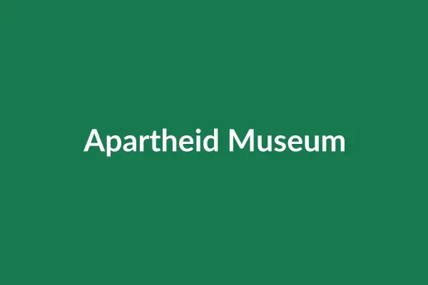
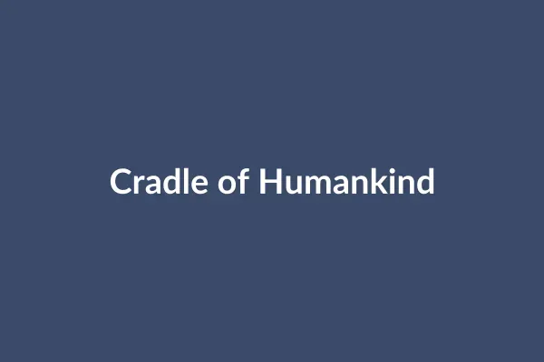

Apartheid Museum
Ormonde
The story of apartheid and the struggle against it, told through film, photographs and personal accounts. Allow at least two to three hours.
Things to do
These are the places we suggest for a first visit. Hours and prices change, so check each place's own website before you go.

Ormonde
The story of apartheid and the struggle against it, told through film, photographs and personal accounts. Allow at least two to three hours.
Braamfontein
A former prison complex where Nelson Mandela and Mahatma Gandhi were held, now home to the Constitutional Court. Guided tours run through the day.
Orlando West, Soweto
The only street in the world where two Nobel Peace Prize winners lived: Nelson Mandela and Archbishop Desmond Tutu. Visit Mandela House and eat at one of the street's restaurants.
Orlando West, Soweto
A memorial to the students killed in the Soweto uprising of 16 June 1976, a short walk from Vilakazi Street.

About 50 km northwest of the city
A UNESCO World Heritage Site with some of the world's richest fossil finds of early humans. Visit the Maropeng visitor centre and the Sterkfontein Caves. Plan a full day.
Emmarentia
A large public garden with a rose garden, herb garden and walking paths beside Emmarentia Dam. Free to enter and good for a picnic.
Braamfontein
A museum at Wits University about the origins of modern humans, with a large collection of southern African rock art.
Rivonia
The farm that served as a secret base for the liberation movement in the 1960s. The 1963 police raid here led to the Rivonia Trial.